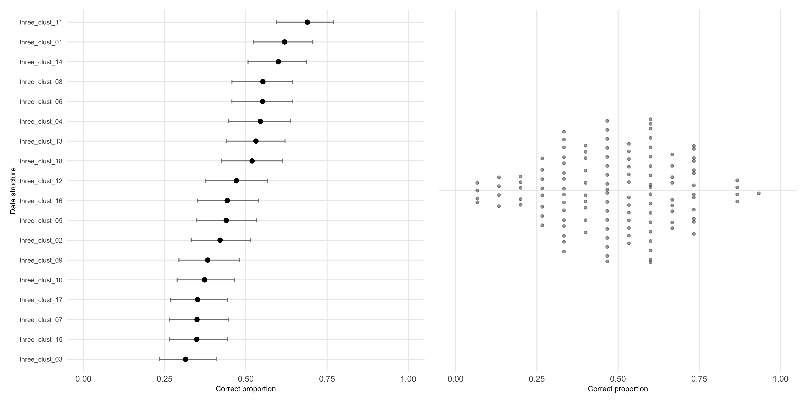

5 Perception and Misperception of Clustering in Nonlinear Dimension Reduction: A User Study
5.1 Method
What is a 2\text{-}D NLDR plot?
The 2\text{-}D representation of the p\text{-}D data constructed to preserve as much information, like clustering and nonlinear relationships, as possible. There are various commonly used techniques for creating this 2\text{-}D representation, including tSNE, and UMAP. These methods aim to identify a low-dimensional structure that captures the most important patterns or relationships in the data, allowing for visualization and easier interpretation. However, it is important to note that 2\text{-}D embeddings can lose some information from the p\text{-}D data, as they necessarily involve a loss of dimensionality.
What is a tour?
The tour shows a sequence of two-dimensional linear projections of the p\text{-}D data. It is similar to looking at shadows of a 3\text{-}D object, and trying to infer the shape of the 3\text{-}D object. Looking at linear projections of p\text{-}D data is like looking at the shadows, and one hopes to gain a sense of what shapes exist in the data. For example, if the data separates into clusters in any of the projections, it means that there are clusters in the data in the high dimensions. If the data shows a nonlinear or curvilinear shape it means that there are nonlinear associations between some variables. If the data collapses to roughly a line it means that it lives in a lower dimensional space than the number of high dimensions. If the points moving differently from others, there are outliers or unusual observations in the high dimensions.
What is being tested?
We are generally interested in testing whether “The two plots displays the same data” (H_0) against the broad alternative “The two plots do not display the same data” (H_a).
Testing this broad null hypothesis (H_0) is practically challenging due to the variety of data structures involved. It can be both time-consuming and computationally intensive. Therefore, we focused on one data structure that is particularly useful for investigation: three clusters where two clusters are close together, while one is more distant. Three clusters have different shapes and each cluster contain different number of points. The sample size is 7500.
Our hypothesis is as follows:
H_{0m1}: The distance between the clusters has no effect on the probability of correctly identifying the 2\text{-}D NLDR plot generated by NLDR method m and the tour from the same data. Vs H_{1m1}: The distance between the clusters does have an effect on the probability of correctly identifying the 2\text{-}D NLDR plot generated by NLDR method m and the tour from the same data.
This study aims to answer which NLDR methods are more accurate in identifying the same data structure in the 2\text{-}D NLDR plot and the tour, as the distance increases, and to identify which types of data structure components are more prone to misidentification across methods.
Data generation
For non-attention check attempts, 28 data structures are generated, while only two data structures are generated for attention check attempts. Before being presented to participants, the data is scaled.
Non-attention check data
For the experiment, three cluster data are generated. The three clusters contain different number of points and shapes. Let C_1, C_2, and C_3 denote the centroids of three clusters. The pairwise distances between these centroids are calculated as: d(C_1, C_2) = c_{12} \approx 2.17, \quad d(C_1, C_3) = c_{13} \approx 4, \quad d(C_2, C_3) \approx c_{23} = 3.6. These results indicate that clusters C_1 and C_2 are in close proximity, whereas cluster C_3 is positioned further away from the other two clusters, suggesting a spatial separation within the data. The reason for using the distance between centroids is that it can be easily controlled.
In total, there are 28 data structures used for the experiment. Out of these, 18 data structures show the same structure in both the 2\text{-}D NLDR plot and tour for each experiment, while the remaining 10 data structures display different structures in the 2\text{-}D NLDR plot and tour. This means that when data structure 19 is displayed in the NLDR plot, data structure 20 appears in the tour.
To systematically vary the degree of separation in the SAME trials, the original (medium large) centroid distances are scaled by four different factors: 0.1 (small), 0.6 (small-medium), 0.9 (medium), and 1.1 (large). In contrast, data structures used for the DIFFERENT trials retained the original (medium-large) centroid distances.
Attention check data
There are two sets of attention check data; one consisting of three Gaussian clusters and the other consisting of four Gaussian clusters. Each cluster is generated using a multivariate normal distribution where the mean vectors and variances were predefined. Specifically, for the three-cluster case, the mean vectors were set as [1, 0, 0, 0], [0, 1, 0, 0], and [0, 0, 1, 1], with a common variance of 0.1 for all clusters. For the four-cluster case, the mean vectors were defined as [1, 0, 0, 1], [0, 1, 1, 0], [1, 0, 1, 0], and [0, 1, 0, 1], also using a variance of 0.1. This approach ensures that data points are normally distributed around the specified centroids, with the spread controlled by the variance parameter. Each Gaussian cluster dataset consists of 4\text{-}D data with a sample size of 7500, and each cluster contains an equal number of data points.
Experiment design
The visual layout of the experiment for one participant is shown in Figure 5.1. Each participant completed 20 trials: 15 SAME trials, in which the same data structure was shown in both the NLDR plot and the tour; 4 DIFFERENT trials, showing DIFFERENT data structures; and one attention check trial that could be either SAME or DIFFERENT. For the SAME, five NLDR methods (tSNE, UMAP, PHATE, PaCMAP, and TriMAP) were each paired with three of five distance scale factors (small, small-medium, medium, medium-large, and large), giving 15 balanced combinations. In the DIFFERENT, four NLDR methods were randomly selected, with the remaining method assigned to the attention check trial. All DIFFERENT and attention check trials used a distance scale factor of medium-large.
Treatments
Two primary treatments were considered in the experiment: the NLDR method and the distance scale factor.
The first treatment consisted of five NLDR methods: tSNE, UMAP, PHATE, PaCMAP, and TriMAP each producing a 2\text{-}D representation.
The second treatment, the distance scale factor, controlled the degree of cluster separation in the high-dimensional space. Five categorical levels: small, small–medium, medium, medium–large, and large were defined to represent increasing degrees of separability. This categorical design enhances interpretability and perceptual distinctness, allowing participants to discern meaningful structural differences while maintaining robustness against minor data variations.
Cluster separability was quantified using two complementary measures: the between-to-within (BW) ratio and the minimum inter-cluster distance. A higher value of either metric indicates greater separation among clusters (Figure 5.2).
The BW ratio, defined as
\text{BW Ratio} = \frac{B}{W} = \frac{ \sum_{i=1}^{3} n_i \cdot \|\bar{\mathbf{x}}_i - \bar{\mathbf{x}}\|^2 }{ \sum_{i=1}^{3} \sum_{\mathbf{x}_j \in C_i} \|\mathbf{x}_j - \bar{\mathbf{x}}_i\|^2 }.
where (B) and (W) denote between- and within-cluster dispersion, respectively; \bar{\mathbf{x}}_i is the centroid of cluster C_i; \bar{\mathbf{x}} is the overall centroid; and n_i is the number of observations in cluster C_i.
In addition, the minimum distance was used as a complementary measure of global separation:
\text{minimum distance} = \min_{k \neq \ell} \min_{x \in C_k, , y \in C_\ell} d(x, y),
which captures the closest proximity between any two clusters.

Participant recruitment
Participants were recruited from the Prolific crowd-sourcing platform (palan2018?). The study expects that the participants are uninvolved judges with no prior knowledge of the data to avoid inadvertently affecting results. Pre-screening procedures were applied the recruitment: potential participants needed with fluent in English and have completed at least 10 Prolific studies with a 98\% approval rate.
Data collection
The survey web application, Match-a-roo was used for data collection. Participants provided introduction and instructions for the survey. Before start the survey, the participants can lead to the “example” page which allow them to experiment with the data collection interface and practice deciding whether the two displays shown the same data or not. The main purpose of using the “example” was merely intended to familiarize the participants with the questions which would be asked as well as the process of deciding whether the two displays shown the same data or not. The interface did not provide any numeric feedback as to participant correctness.
The participants were asked to provide their Prolific ID and their consent to the responses being used for analysis. After giving consent, the participant can start the trials. Two visual displays of data were shown where the data may be the SAME or DIFFERENT. One of the visual displays is a 2\text{-}D NLDR plot, and the other is a tour. The participants were asked to decide whether that data was the same in both displays and to report their confidence about their choice and any comments about the answer.
After completing 20 evaluations, they were asked for their demographics which included preferred pronoun, the highest level of education achieved, their age category, whether they used principal component analysis in their work, and whether they applied NLDR techniques such as tSNE and UMAP.
Generalized Linear Mixed-Effects Models
Two generalized linear mixed effects models (mcculloch2001?) were fitted to model the likelihood of detecting the data structure in both the 2\text{-}D NLDR plot and the tour (Equation B.1). Both models accounted for participant-level variability and the effect of distance measures under different NLDR methods. The general form of the model is given by:
\text{logit}(P(y_{ijm} = 1)) = \mu_{m} + \beta_{m} d_{i} + \gamma_{j} \tag{5.1}
where \mu_{m} is the overall mean for NLDR method m, d_i is the distance measure for the data structure i = 1, \dots, 18, \beta_m is the fixed effect of BW ratio under NLDR method m, \gamma_j is the random effect of the participant j = 1, 2, \dots, 127, where \gamma_j \sim N(0, \sigma_\gamma^2). Separate models were fitted using d_i as either the scaled BW ratio or the exp(scaled minimum distance). The NLDR methods denoted by m can include TriMAP, UMAP, PaCMAP, tSNE, and PHATE.
5.2 Results
The data was collected from 127 participants, resulting in 127 \times 15 = 1905 evaluations, excluding the attention check trials and the trials shows the different data in two displays.
Correct proportions
The proportion of correct identifications across NLDR methods and distance conditions was analysed to evaluate how effectively each method preserves cluster separation. Results are summarized using two generalized linear mixed-effects models, with either the scaled BW ratio (Figure 5.3, Table 5.1) or the exp(scaled minimum distance) (Figure 5.4, Table 5.2) as the distance predictor. Both models accounted for participant-level variability through random effects and included NLDR method as a fixed factor interacting with the distance measure.
Results from the model using the scaled BW ratio (Table 5.1) indicate that cluster separability positively influences correct identification for some NLDR methods. As shown in Figure 5.3, UMAP exhibits a clear increase in accuracy as the scaled BW ratio increases, suggesting that this method benefits from greater between-cluster separation. PaCMAP shows a positive but weaker trend, while TriMAP maintains stable performance across the range of separations. In contrast, tSNE and PHATE display declining accuracy at higher BW ratios, indicating that increased separation may distort or obscure structural cues for these methods.
***’, \emph{p}\leq 0.01 ‘**’, \emph{p}\leq 0.05 ‘*’, \emph{p}\leq 0.1 ‘.’).
| method | estimate | SE | asymp.LCL | asymp.UCL | z.ratio | p.value | p_val_sig |
|---|---|---|---|---|---|---|---|
| TriMAP | 0.03 | 0.49 | -0.92 | 0.99 | 0.07 | 0.95 | |
| UMAP | 1.15 | 0.49 | 0.19 | 2.11 | 2.35 | 0.02 | * |
| PaCMAP | 0.51 | 0.48 | -0.43 | 1.45 | 1.06 | 0.29 | |
| tSNE | -2.61 | 0.62 | -3.83 | -1.40 | -4.20 | 0.00 | *** |
| PHATE | -0.92 | 0.54 | -1.97 | 0.13 | -1.71 | 0.09 | . |

To assess whether these patterns depend on how separation is quantified, we fitted a second model using the exp(scaled minimum distance) as an alternative measure of cluster separability (Table 5.2). The results closely mirror those obtained with the BW ratio (Figure 5.4). In particular, UMAP again shows a significant positive association between separation and correct identification probability, confirming that greater spatial distance between clusters enhances its ability to reveal the underlying structure. Conversely, tSNE demonstrates a strong negative association, with performance deteriorating as minimum distance increases, while PHATE exhibits a weaker but consistent negative trend. The effects for PaCMAP and TriMAP are not statistically significant, indicating comparatively stable performance across varying levels of separation.
***’, \emph{p}\leq 0.01 ‘**’, \emph{p}\leq 0.05 ‘*’, \emph{p}\leq 0.1 ‘.’).
| method | estimate | SE | asymp.LCL | asymp.UCL | z.ratio | p.value | p_val_sig |
|---|---|---|---|---|---|---|---|
| TriMAP | 0.20 | 0.20 | -0.20 | 0.59 | 0.97 | 0.33 | |
| UMAP | 0.59 | 0.20 | 0.20 | 0.98 | 2.99 | 0.00 | *** |
| PaCMAP | 0.22 | 0.19 | -0.16 | 0.60 | 1.12 | 0.26 | |
| tSNE | -0.78 | 0.22 | -1.20 | -0.35 | -3.60 | 0.00 | *** |
| PHATE | -0.35 | 0.21 | -0.76 | 0.06 | -1.68 | 0.09 | . |

Taken together, these results demonstrate that the impact of cluster separability on correct identification is robust to the choice of distance measure but varies substantially across NLDR methods. Methods such as UMAP benefit from increased separation, whereas tSNE and PHATE appear sensitive to over-separation, potentially leading to distortions in the low-dimensional representation. TriMAP, by contrast, shows little sensitivity to changes in separation, suggesting robustness across a wide range of cluster configurations.
Patterns for misidentification

5.3 Limitations
One of the main drawbacks of visual experiments is their reliance on human judgments. In this context, the effectiveness of identifying the 2\text{-}D NLDR plot and the tour from the same data can be dependent on the perceptual ability and visual skills of the individual. However, when the results from multiple individuals are combined, the overall quality and robustness of the outcome is considerably high.
It is important to remove HTML widget elements such as controls, interactivity, and 2\text{-}D plot elements such as axis labels and text that might introduce bias. We recommend using a crowd-sourcing service like Prolific (palan2018?) to access high-quality data, as it is a time- and cost-effective way.
In this study, we used a specific data structure consisting of three distinct clusters, each with unique shapes. Two of the clusters are in close proximity to one another, while the third cluster is located farther away. Each cluster varies in the number of points it contains. We selected this data structure because it is simple.
To keep the experiment fair and consistent across trials, we approximately fixed the distance between the clusters in each data structure. We also used five distance scale factors to gradually change how far apart the clusters were. While this controlled setup makes it easier to interpret the results, it does limit how well the findings apply to more complex data structures with uneven or irregular cluster arrangements.